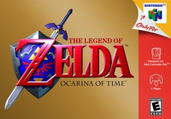
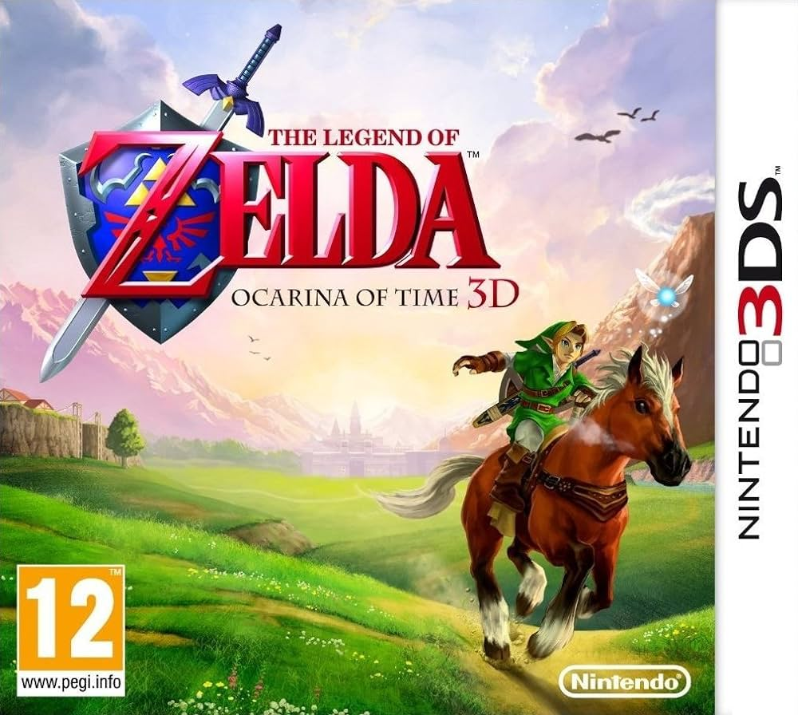

Tudo sobre The Legend of Zelda: Ocarina of Time
The Legend of Zelda: Ocarina of Time é um jogo eletrônico de ação e aventura desenvolvido e publicado pela Nintendo para o Nintendo 64. Foi lançado no Japão e na América do Norte em novembro de 1998 e nas regiões PAL no mês seguinte. Ocarina of Time é o primeiro jogo da série The Legend of Zelda com gráficos 3D.
Foi desenvolvido pela Nintendo Entertainment Analysis & Development (EAD), liderada por cinco diretores, incluindo Eiji Aonuma e Yoshiaki Koizumi, produzido pelo cocriador da série Shigeru Miyamoto, e escrito por Kensuke Tanabe. O compositor veterano da série Zelda Koji Kondo criou a trilha sonora. O jogador controla Link na terra da fantasia de Hyrule em uma missão para parar o rei maligno Ganondorf, viajando no tempo e navegando em masmorras e um overworld. O jogo introduziu recursos como um sistema de bloqueio de alvo e botões sensíveis ao contexto que se tornaram comuns em jogos de aventura em 3D. O jogador deve aprender a tocar várias músicas em uma ocarina para progredir.
Ocarina of Time recebeu muitos elogios da crítica e dos consumidores e ganhou vários prêmios e elogios, em relação ao seu visual, som, jogabilidade, trilha sonora e escrita. Foi classificado por várias publicações como o melhor jogo eletrônico de todos os tempos, e é o jogo mais bem avaliado de todos os tempos do agregador de críticas Metacritic. Foi um sucesso comercial, com mais de sete milhões de cópias vendidas em todo o mundo. Nos Estados Unidos, recebeu mais de três vezes mais pré-encomendas do que qualquer outro jogo da época, e foi o jogo mais vendido de 1998 no país.
Jogabilidade
The Legend of Zelda: Ocarina of Time é um jogo de ação e aventura e fantasia ambientado em um cenário expansivo. O jogador controla o protagonista da série, Link, a partir de uma perspectiva em terceira pessoa, num mundo tridimensional. Link luta principalmente com uma espada e um escudo, mas também pode usar outras armas, como projéteis, bombas e feitiços mágicos. O esquema de controles introduz técnicas como ações sensível ao contexto e um sistema chamado "Z-targeting", que permite que o jogador faça com que Link fique focado e se agarre a inimigos ou outros objetos. Ao usar esta técnica, a câmera segue o alvo e Link constantemente o encara. Ataques de projéteis são direcionados automaticamente ao alvo e não requerem mira manual. Ações sensíveis ao contexto permitem que várias tarefas sejam atribuídas a um botão, simplificando o esquema de controle. A exibição na tela mostra o que acontecerá quando o botão for pressionado e muda dependendo do que o personagem está fazendo. Por exemplo, o mesmo botão que faz com que Link empurre uma caixa, se ele estiver próximo a ela, fará com que ele suba na caixa caso o analógico seja empurrado em direção a ela.
Enredo
Cenário
Ocarina of Time se passa no reino fictício de Hyrule, o cenário da maioria dos jogos de The Legend of Zelda. O Campo de Hyrule serve como o hub central e está conectado a várias áreas periféricas com topografia diversificada e as raças de Hyrule.
História
A fada Navi desperta Link de um pesadelo no qual ele testemunha um homem de armadura negra perseguindo uma menina fugindo a cavalo. Navi leva Link à Grande Árvore Deku (Great Deku Tree), que está amaldiçoada e à beira da morte. A Árvore Deku conta a Link que um "homem perverso do deserto" o amaldiçoou e quer dominar o mundo, e que Link deve impedi-lo. Antes de morrer, a Grande Árvore Deku dá a Link a Pedra Espiritual da Floresta e o envia ao Castelo de Hyrule para falar com a princesa.
Nos jardins do Castelo, Link encontra a Princesa Zelda, a qual crê que Ganondorf, o rei dos Gerudos, está em busca da Triforce, uma relíquia sagrada que dá ao seu detentor poderes divinos. Zelda pede a Link que obtenha as três Pedras Espirituais para que ele possa entrar no Reino Sagrado e reivindicar a Triforce antes que Ganondorf o faça. Link recolhe as outras duas pedras: a primeira de Darunia, líder dos Gorons, e a segunda de Ruto, princesa dos Zoras. Link retorna ao Castelo de Hyrule, onde vê Ganondorf perseguir Zelda e sua zeladora Impa a cavalo, como em seu pesadelo, e tenta sem sucesso detê-lo. No Templo do Tempo, Link usa a Ocarina do Tempo, um presente de Zelda, e as Pedras Espirituais para abrir a porta para o Reino Sagrado. Lá ele encontra a Master Sword, mas ao puxá-la de seu pedestal, ele fica incapacitado e Ganondorf, tendo entrado no Templo atrás de Link, aparece e reivindica a Triforce.
Sete anos depois, Link, já crescido, desperta no Reino Sagrado e encontra Rauru, um dos sete Sábios que protege a entrada do reino. Rauru explica que o espírito de Link foi selado por sete anos até que ele tivesse idade suficiente para empunhar a Master Sword e derrotar Ganondorf, que tomara Hyrule. Os sete Sábios podem aprisionar Ganondorf no Reino Sagrado, mas cinco deles desconhecem suas identidades como sábios. Link é reenviado ao Templo do Tempo, onde encontra o misterioso Sheik, que o guia para libertar cinco templos do controle de Ganondorf e, assim, despertar os sábios de cada templo. Link conheceu todos os cinco sábios quando criança: sua amiga de infância, Saria, a Sábia do Templo da Floresta; Darunia, o Sábio do Templo do Fogo; Ruto, a Sábia do Templo da Água; Impa, a Sábia do Templo das Sombras; e Nabooru, chefe dos Gerudos na ausência de Ganondorf, a Sábia do Templo do Espírito. Depois de os cinco sábios despertarem, Sheik revela ser Zelda disfarçada e a sétima sábia. Ela conta a Link que o coração desequilibrado de Ganondorf fez com que a Triforce se dividisse em três partes. Ganondorf adquiriu apenas a Triforce do Poder, enquanto Zelda recebeu a Triforce da Sabedoria e Link, a Triforce da Coragem.
Ganondorf aparece e sequestra Zelda, aprisionando-a em seu castelo. Os outros seis sábios ajudam Link a infiltrar-se na fortaleza; Link liberta Zelda após derrotar Ganondorf, que em seguida destrói o castelo na tentativa de matá-los. Depois de escaparem do colapso do castelo, Ganondorf ressurge dos escombros e, usando a Triforce do Poder, transforma-se num monstro com aparência de javali, denominado Ganon, e arrebata a Master Sword das mãos de Link. Com ajuda de Zelda, Link recupera a espada e derrota o monstro. Os sete Sábios selam Ganondorf no Reino das Trevas; ainda detendo a Triforce do Poder, ele jura vingança aos seus descendentes. Zelda usa a Ocarina do Tempo para enviar Link de volta a sua infância. Navi parte e o jovem Link encontra Zelda no jardim do castelo mais uma vez, onde ele mantém o conhecimento do destino de Hyrule, começando com seu declínio.
Desenvolvimento
Ocarina of Time foi desenvolvido simultaneamente com Super Mario 64 e Mario Kart 64 para o Nintendo 64 (N64) pela Nintendo Entertainment Analysis & Development (EAD). O jogo teve um orçamento superior a 12 milhões de dólares. Mais de duzentas pessoas trabalharam no jogo.
Originalmente desenvolvido para o 64DD, um periférico para o N64 baseado em disquetes, o desenvolvimento acabou sendo migrado para um cartucho comum, devido aos requisitos de alto desempenho de dados impostos pela leitura contínua de quinhentas animações de personagens capturadas por movimento ao longo do jogo. Inicialmente planejado como um jogo de 16 megabytes, mais tarde foi aumentado para 32 megabytes, tornando-se o maior jogo que a Nintendo havia criado na época. No início do desenvolvimento, a equipe estava preocupada com as restrições de armazenamento do cartucho; na pior das hipóteses, Ocarina of Time seguiria uma estrutura semelhante a Super Mario 64, com Link restrito ao castelo de Ganondorf como um centro de ligação às demais áreas, usando um sistema de portal similar ao das pinturas que Mario usa para atravessar o reino. Uma ideia que surgiu deste estágio de desenvolvimento, uma batalha com um doppelgänger de Ganondorf que atravessa pinturas, foi usada como o chefe do Forest Temple.
Recepção
| Recepção | |
|---|---|
| Resenha crítica | |
| Publicação | Nota |
| Edge | 10/10 |
| Electronic Gaming Monthly | 10/10 |
| GameSpot | 10/10 |
| IGN | 10/10 |
| Nintendo Power | 9.5/10 |